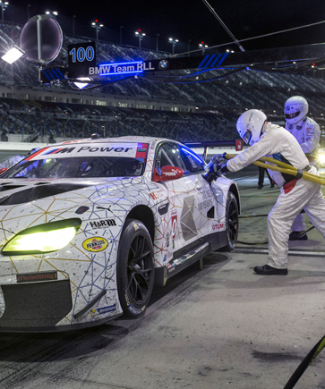

Rahal Letterman Lanigan Racing (RLLR), based in Hillard, Ohio has been competing for more than two decades. Co-owned by three-time IndyCar Champion and 1986 Indianapolis 500 Winner, Bobby Rahal, former CBS LATE SHOW host, David Letterman and Mi-Jack co-owner, Mike Lannigan, the team has compiled numerous victories and series championships in both IndyCar and GT racing and claimed an Indy 500 victory in 2004 with Buddy Rice.
RAHAL LETTERMAN LANIGAN RACING
Rahal Letterman Lanigan Racing (RLLR), based in Hillard, Ohio has been competing for more than two decades. Co-owned by three-time IndyCar Champion and 1986 Indianapolis 500 Winner, Bobby Rahal, former CBS LATE SHOW host, David Letterman and Mi-Jack co-owner, Mike Lannigan, the team has compiled numerous victories and series championships in both IndyCar and GT racing and claimed an Indy 500 victory in 2004 with Buddy Rice.

BOBBY RAHAL
Robert “Bobby” Woodward Rahal has established himself as a legend in the world of American auto racing, taking on the roles of both team owner and driver after winning three Indy Car championships and the 1986 Indianapolis 500. He added to that legacy in 2004 by winning the Indy 500 as a team owner, becoming the second person to ever win the race as both. As a driver, Rahal raced in Indy Car, Can–Am, Formula One and NASCAR. Rahal was inducted into the International Motorsports Hall of Fame in 1994 and the Motorsports Hall of Fame of America in 2004.

JAY O'CONNELL
As technical director for Rahal Letterman Lanigan Racing, Jay O'Connell will continue his success in open-wheel and sports car racing by strengthening the operations of the ALMS team's engineering department and its programs. After graduating from Cornell University in 1988 with a degree in Mechanical Engineering, O'Connell worked with Ford Racing CART and Jaguar Racing Formula One until 2002. O'Connell also redesigned the Panoz LMGT2 chassis, which won the 12 Hours of Sebring, and headed a team of 25 engineers working on the 2007 Shelby GT500 as their SVT Chief Vehicle Engineer for the Ford Motor Company.

JIM PRESCOTT
To oversee the BMW Rahal Letterman Lanigan Racing Team, Bobby Rahal chose longtime right–hand man and childhood friend, Jim Prescott. Prescott previously directed the high–profile Toyota Championship Program, which included driver Danica Patrick, and acted as Rahal's crew chief for 16 of his 17 CART seasons.